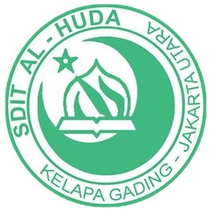
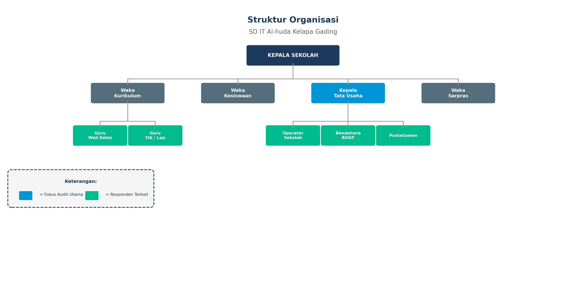
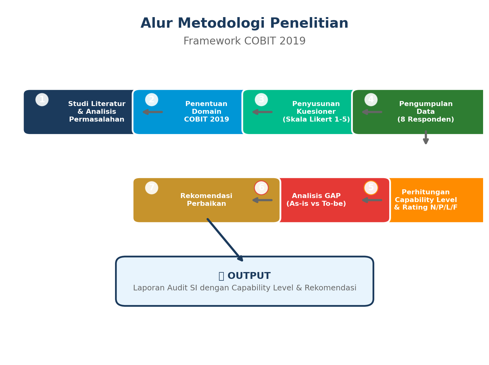
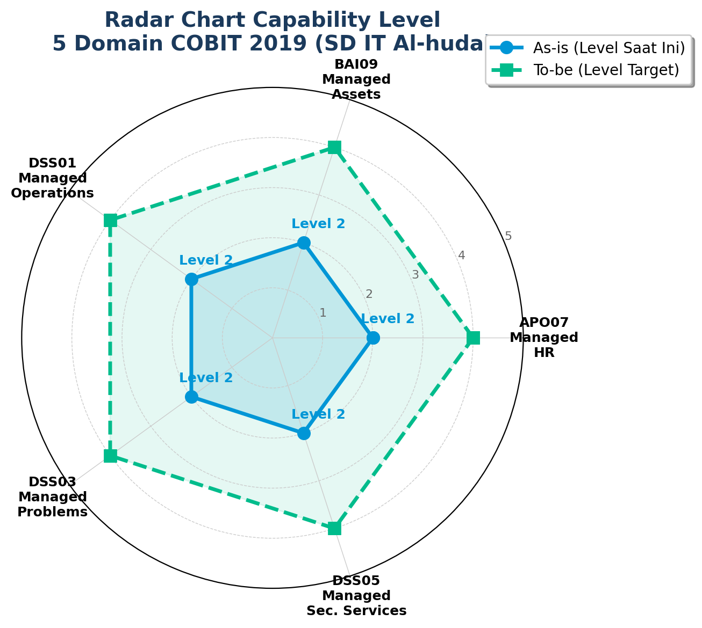
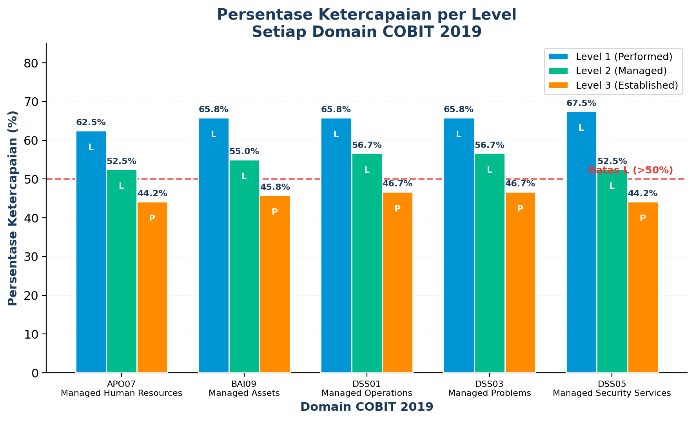
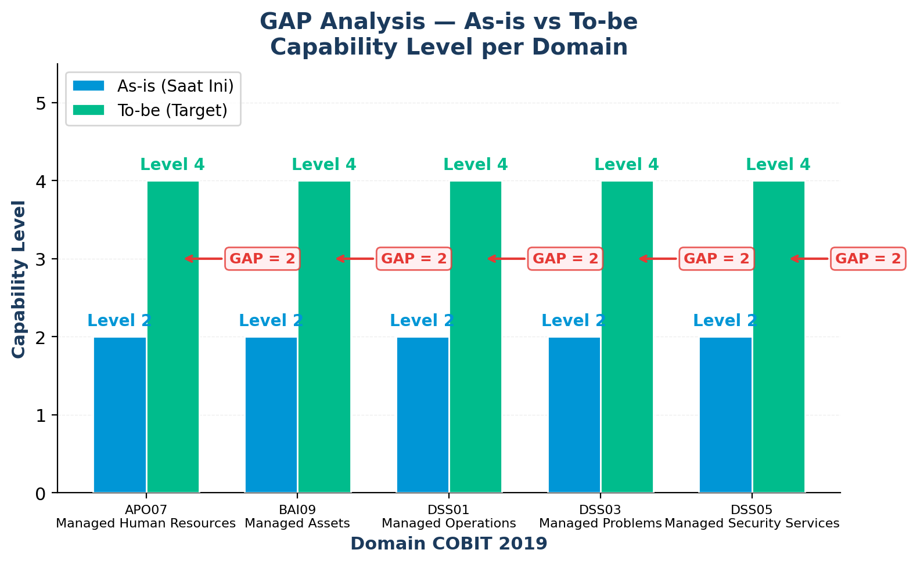

Penilaian Capability Level dan Analisis GAP pada 5 Domain Utama (APO07, BAI09, DSS01, DSS03, DSS05) untuk meningkatkan keandalan sistem administrasi dan operasional pendidikan.
Ketergantungan operasional SD IT Al-huda terhadap sistem informasi pendidikan (Dapodik, BOSP) dan Lab Komputer mengharuskan adanya tata kelola TI yang stabil dan aman.
Pengelolaan aset hardware/software belum terdokumentasi sistematis, serta kurangnya SOP formal untuk penanganan kendala teknis (insiden) di ruang Lab Komputer.
Aspek keamanan informasi data (Dapodik, nilai siswa) masih bersifat dasar tanpa kebijakan tertulis, dan kompetensi literasi digital guru/staf belum dipantau merata.
Managed HR
Evaluasi kompetensi & pelatihan TI untuk guru dan staf sekolah.
Managed Assets
Pengelolaan aset PC Lab, lisensi software, dan server sekolah.
Managed Ops
Operasional harian, penjadwalan Lab, dan backup data sistem.
Managed Probs
Penanganan insiden, kendala teknis saat CBT, dan mitigasi error.
Managed Sec
Keamanan data sensitif siswa (Dapodik), jaringan lokal, akses.


Nilai ketercapaian dihitung berdasarkan kuesioner dengan rating N/P/L/F. Jika suatu level memperoleh rating "L" (>50%), maka level tersebut dianggap tercapai.

Hasil kuesioner menunjukkan bahwa kelima domain (APO07, BAI09, DSS01, DSS03, DSS05) telah mencapai Level 2 (Managed Process) secara penuh. Artinya, aktivitas dasar operasional TI di SD IT Al-huda sudah berjalan dengan tanggap dan dikelola secara riil.
Pencapaian untuk Level 3 rata-rata hanya berada pada rating P (Partially Achieved) di angka ~44% - 46%, tidak mencapai ambang batas >50% (L). Hal ini disebabkan oleh ketiadaan Standar Operasional Prosedur (SOP) tertulis, inventaris digital, dan SLA.


GAP ini seragam dan merata pada seluruh domain yang diaudit, menandakan pola pengelolaan yang sama.
Sahkan Standar Operasional Prosedur (SOP) secara resmi oleh manajemen/Yayasan terkait pemeliharaan Lab, penanganan insiden TIK, dan backup data rutin (Menjawab DSS01 & DSS03).
Tinggalkan pencatatan manual. Gunakan aplikasi sistem inventaris digital terbuka (open-source) untuk pendataan PC, software, dan tiket pelaporan kerusakan guna memantau SLA (Menjawab BAI09).
Tetapkan kebijakan perlindungan data privasi siswa (khusus data Dapodik) dan laksanakan program pelatihan literasi digital/keamanan dasar bagi guru & staf secara periodik (Menjawab APO07 & DSS05).
Semoga evaluasi COBIT 2019 ini dapat mendorong terwujudnya tata kelola TI yang tangguh dan terprediksi di lingkungan SD IT Al-huda.